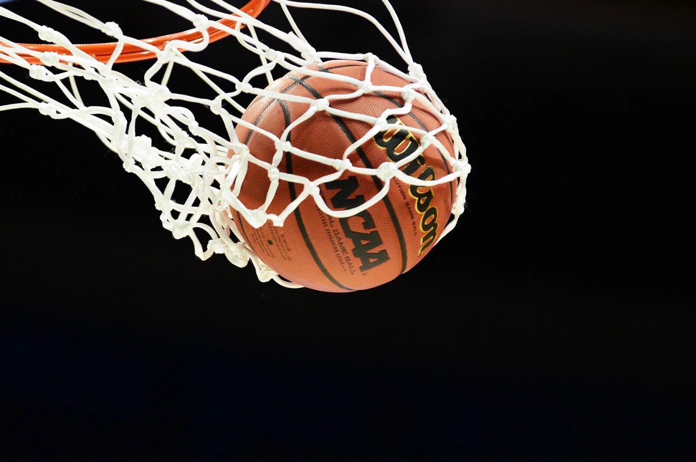
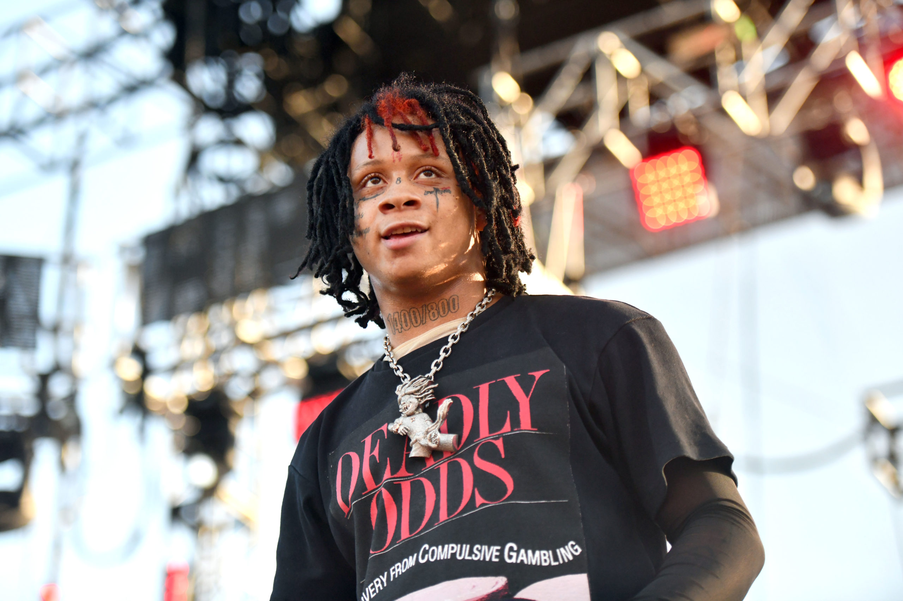
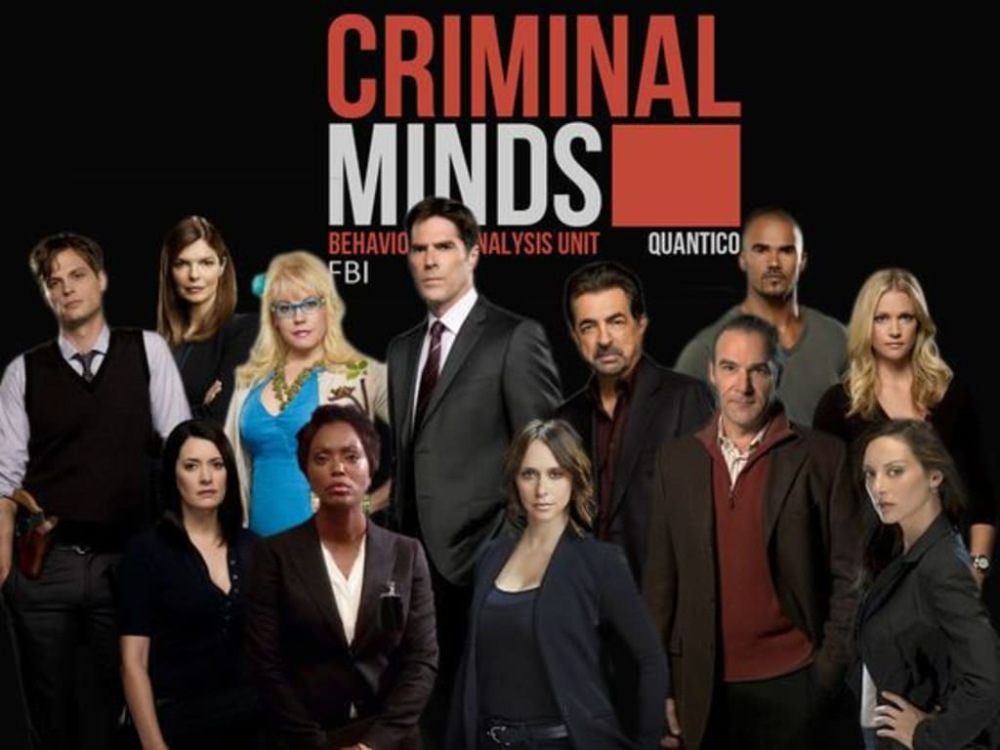
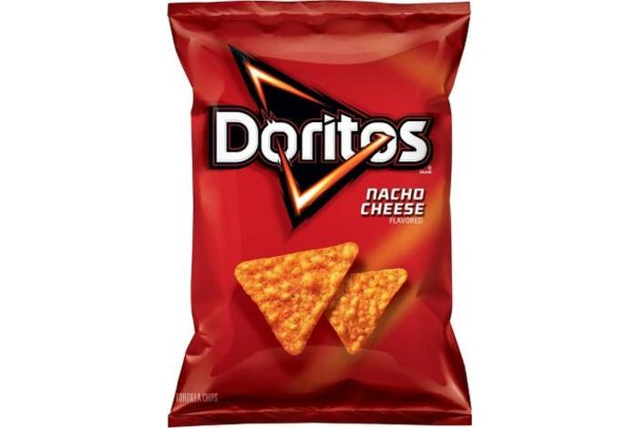
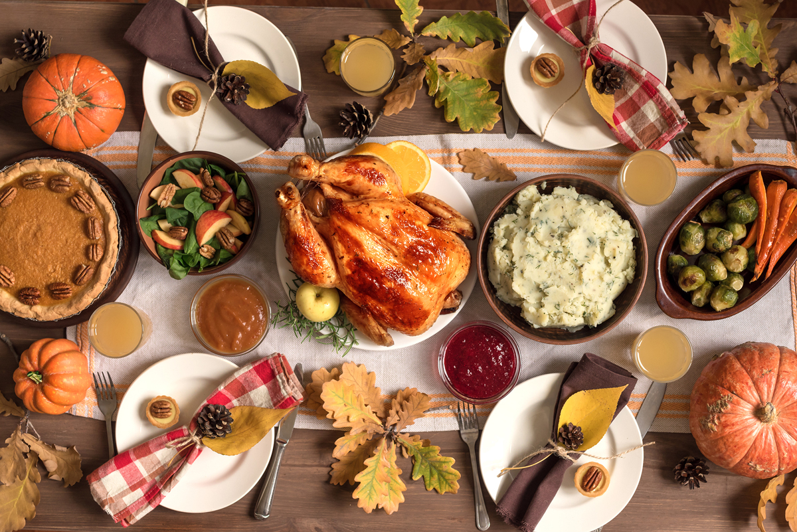
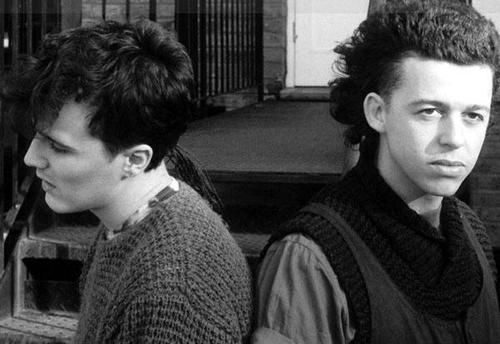
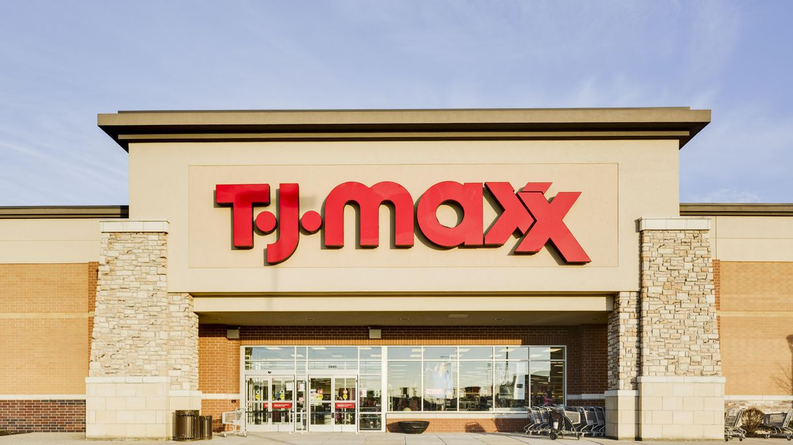

Emily's Top 10 Favorite Things
Favorite Food
Favorite Sport
Favorite College
Favorite Artist
Favorite Show
Favorite Snack
Favorite Holiday
Favorite Animal
Favorite Song
Favorite Store
My favorite food is mac n' cheese. I like it homemade or boxed.
Best Mac N' Cheese Recipe
My favorite sport is basketball. I have played since first grade.
Best College Team EVERR
My favorite college is Clemson. My sister went there and loved it and now I want to go there. If I get in, I really want to be KD.
Kappa Delta Sorority
My favorite artist is Trippie Redd. He's a rapper and has a lot of tattoos.
Trippie Redd Merch
My favorite TV show is Criminal Minds. I've watched it so many times and I never get sick of it. My favorite character is Morgan. He is amazing.
Shemar Moore AKA Derek Morgan
My favorite snack is Nacho Cheese Doritos. I could probably eat a whole bag in one sitting.
Buy some doritos locos tacos here!
My favorite holiday is Thanksgiving. I get to see my family and eat the best food ever. Also sometimes it falls on my brithday.
Make some stuffing
My favorite animals are cows. I've loved them ever since I was little and I even went as one for halloween even though I was definetly way too old to dress up as a cow.
Click here for the best chocolate milk you'll ever try
I have a lot but my all time favorite song is Everybody Wants to Rule the World. I don't really know why I like it so much but I do. I love driving and listening to it.
Click here to listen
My favorite place to shop is TJ Maxx. It literally has everything and it's not even expensive. I coule probably blow all my savings here.
Click here to shop!